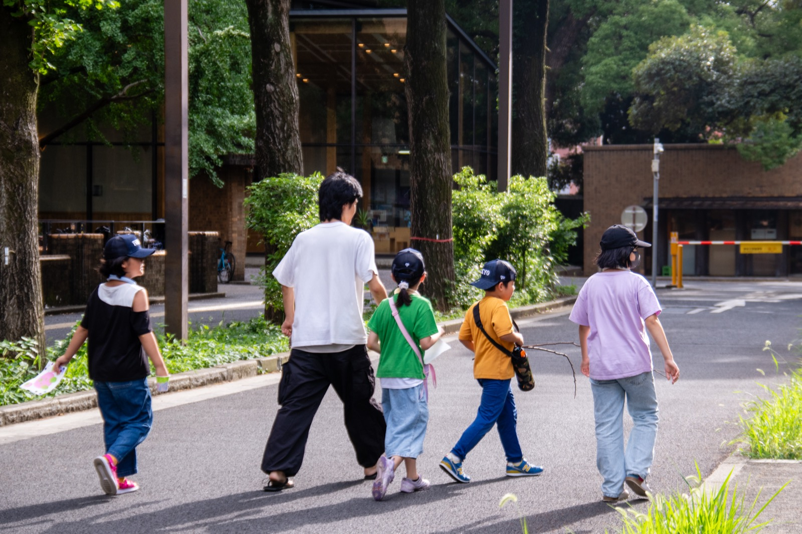

Trusted youth support platform
子どもの居場所を、
継続可能な仕組みとして広げていく。
OIKOSは大学生主体の居場所「ゆーすぽっと」を運営し、その立ち上げと継続を各地で伴走しています。この案では、活動の意義だけでなく、運営の信頼性・継続性・連携しやすさがひと目で伝わる構造を目指します。
大学生主体
地域連携
継続運営モデル
POINT 感情的な共感だけでなく、連携先が安心して判断できる構造と証拠を最初に提示します。

月次・単発の両方で支援を受け付け、運営費の見通しを高めます。
大学・企業・地域団体との協働を前提に、説明責任のある導線を設計します。
News & updates
最新情報と組織の動きが、整然と見える。
ニュース、採用、報告、支援募集など、外部向けに重要な情報を見つけやすく整理します。
External trust 最初に必要なのは、団体の現在地が整理されていること。
2025年度活動報告書を公開しました
拠点別の取り組み、参加者数、寄付活用内訳などを一覧で確認できます。
新拠点立ち上げの相談受付を開始
大学生チーム向けに、初期設計や地域連携の相談窓口を開設しました。
春の寄付募集キャンペーンを開始
新年度の継続運営に必要な寄付目標額と用途を、わかりやすく公開しています。

Mission
学生の熱量を、地域で続く仕組みに変える。
OIKOSは、学生主体の温度感を大切にしつつ、団体としては説明責任と継続可能性を強く意識しています。熱意だけで終わらず、次年度以降も続く運営モデルを築くことが特徴です。
Why trust matters
支援者・企業・大学にとって判断しやすいホームページへ。
このデザインでは、感情訴求だけでなく、何をしている団体か・どのように運営されているか・どう関われるかを即座に理解できるようにします。初見の人が安心して問い合わせや寄付に進めることを重視します。
ページ全体を通じて、情報の階層、数値の置き方、行動導線の明確さを強め、信頼できるNPOとしての印象を作ります。
3主要な関わり方を明確に提示
1最上位CTAで支援導線を一本化
Programs
活動を、3つの柱で明快に提示する。
取り組みを体系立てて整理し、外部から見ても事業構造が理解しやすいページにします。
居場所の運営
放課後・休日のゆーすぽっとを学生主体で運営し、子どもたちが安心して過ごせる環境をつくります。
- 週次の場づくり
- 学習・対話支援
- 保護者・地域連携
継続運営の基盤
立ち上げ伴走
新しく活動を始めたい学生チームに向けて、運営ノウハウや初期設計を伴走支援します。
- 拠点立ち上げ設計
- マニュアル・研修提供
- 初年度の伴走支援
新拠点の再現性
ネットワーク形成
大学・地域・企業をつなぎ、孤立しない運営体制をつくることで、継続可能性を高めます。
- 協賛・寄付連携
- 地域団体との協働
- 横断的な学び合い
連携先を広げる
Impact data
数字で見ても、継続してきたことがわかる。
定性的な価値とあわせて、団体としての蓄積がひと目で見える実績セクションです。
参加人数
これまで関わってきた子ども・若者の累計人数。
大学拠点
運営中または伴走中の拠点数。
再訪意向
「また来たい」と回答した割合。
年間研修
学生スタッフ向けに実施した研修回数。
Voices
信頼は、現場の実感から生まれる。
支援者・学生・子ども、複数の視点から団体の価値を補強するセクションです。
「場が続いていく仕組みがあるから、安心して後輩に託せる。」
熱意だけではなく、運営ノウハウや相談体制が整っていることが、継続の支えになっています。
「地域と大学をつなぐハブとして、連携しやすい団体だと感じる。」
活動の見え方と説明の明快さが、協働先にとっての安心感につながります。
Support
支援も、連携も、判断しやすく。
この案では、寄付・法人協賛・大学連携・ボランティア参加など、関わり方ごとの入口を明快に整理します。初めての人が迷わないことを、行動導線の中心に置きます。
寄付、法人協賛、大学連携、学生参加。外部の人が次のアクションを判断しやすい終わり方を意識しています。
For partners
企業・大学との協働にも強い構成。
ロゴ掲載、実績、活動領域、問い合わせ動線を整理しやすいため、協賛提案や面談時の説明資料としても使いやすいトップページ案です。